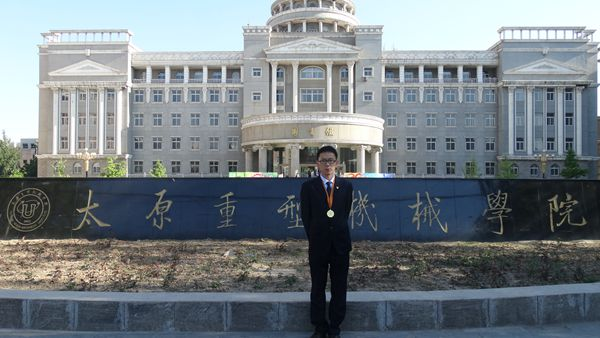
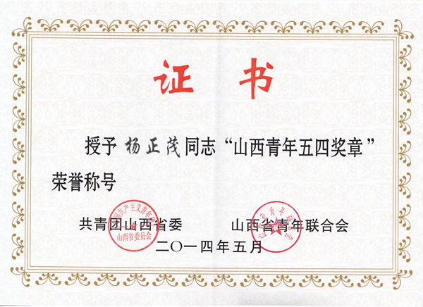

我校研究生杨正茂荣获“山西青年五四奖章”
时间：2014-5-5 19:04:29作为团省委、省青联授予我省青年和青年集体的最高荣誉，第十四届“山西青年五四奖章”昨天揭晓，我校研究生杨正茂成为唯一的一名高校学生获此殊荣。
据悉，为树立和宣传当代山西青年的先进典型，鼓舞广大团员青年踊跃投身我省转型跨越发展，共青团山西省委、山西省青年联合会决定，授予杨正茂等28名同志第十四届“山西青年五四奖章”、太原广播电视台音乐广播“小桔灯爱心联盟”等20个集体第七届“山西青年五四奖状”。

山西省纪念五四运动九十五周年“我的中国梦－－奋斗的青春最美丽”主题团日活动昨天上午在太原高新区电子商务产业园区召开。省委常委、秘书长聂春玉与全省各界青年代表一同参观产业园区并座谈。我校研究生杨正茂作为优秀青年代表在座谈会上发言，与参会人员分享了自己在科技创新道路上不懈奋斗的心路历程。

杨正茂，系我校机械工程学院2012级硕士研究生，师从我校机械工程学院院长，博士生导师孟文俊教授，从事重大装备机械结构可靠性分析的研究工作。在多年的求学过程中，先后获得BICES中国首届国际工程机械及专用车辆创意设计大赛国家一等奖、第十二届“挑战杯”全国大学生课外学术科技作品竞赛国家三等奖、山西省第四届“兴晋挑战杯”大学生创业计划竞赛山西省银奖、第十三届“挑战杯”全国大学生课外学术科技作品竞赛国家三等奖等多个奖项，并参与国家自然科学基金机电液一体化系统中液压子系统的伪功率流无源性建模和控制研究等多项研究项目，撰写了多篇学术论文，有1篇被SCI期刊、1篇被EI期刊收录；荣获中国青少年科技创新领域的崇高荣誉—中国青少年科技创新奖，成为我省高等院校中唯一获得此殊荣的学生；组建的“重大装备设计关键技术应用研究团队”荣获全国首批大学生“小平科技创新团队”荣誉称号，成为山西省仅有的两支“小平科创团队”之一；荣获我省青年和青年集体的最高荣誉——第十四届“山西青年五四奖章”； 山西省“十大最受关注新青年”，被聘为山西省“我的中国梦—奋斗的青春最美丽”山西分享团成员。